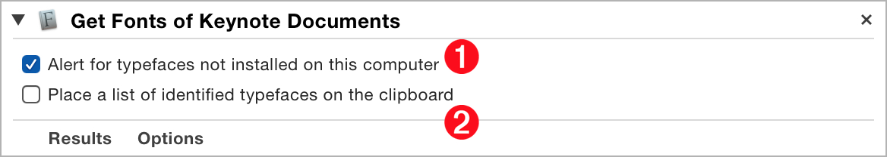
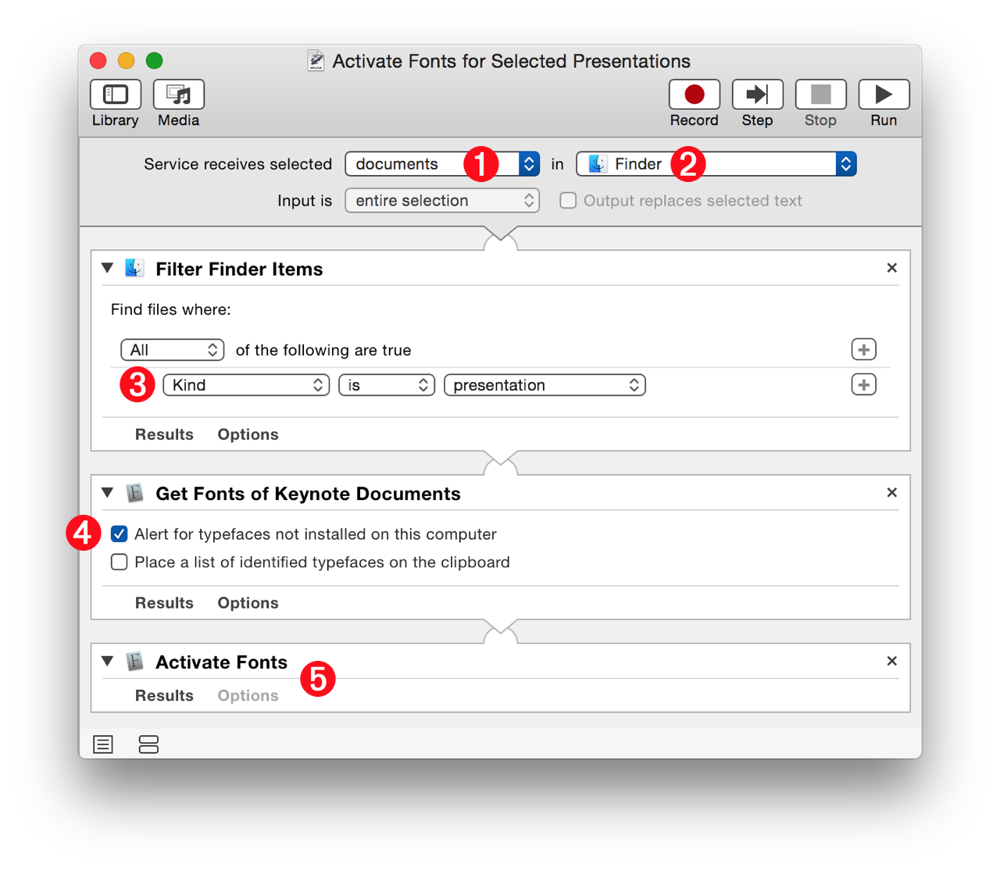
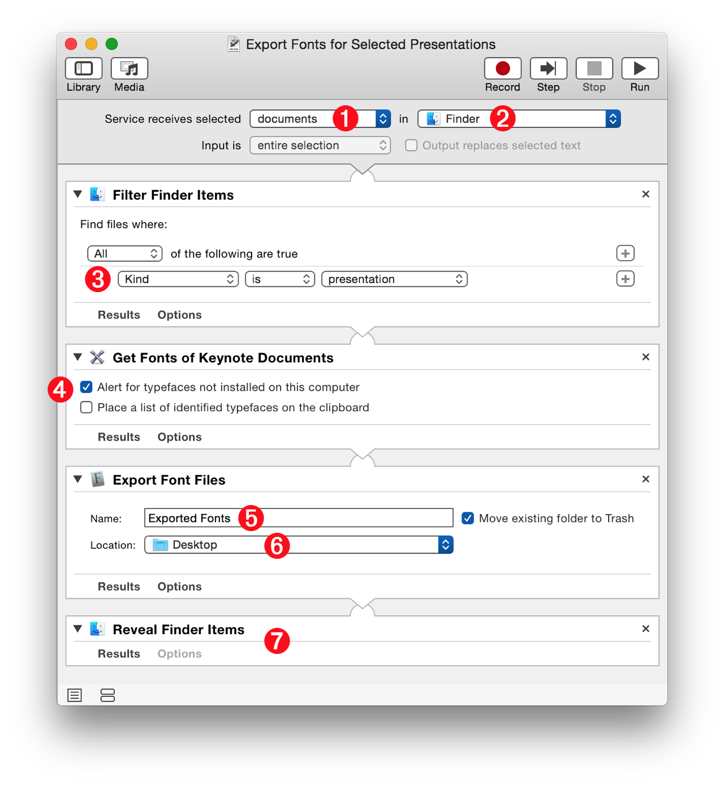

The “Get Fonts of Keynote Documents” Automator action extracts Font Book references to the typefaces used by the Keyote-compatible document files passed to this action as input.
The Action Information
| Input: | References to Keynote-compatible document files |
| Output: | Font Book references to the typefaces used by the presentation files passed to the action as input |
| Parameters: | User-settable parameters include:
|
| Related: | Other actions that may precede this action:
|
| Related: | Other actions that may follow this action:
|
The Action Interface

1 Alert for Missing Typefaces - Selecting this option will enable the display of an alert dialog listing any typefaces, used by the presentation document, that are not installed on the host system. This alert will stop the workflow from continuing to execute.
2 Copy Font List to Clipboard - Selecting this option will place a list of the typefaces, used by the presentation document, on the clipboard.
Using this Font Book action, workflows can activate disabled fonts and alert the user for typefaces not installed on the host system. Here are two example service workflows demonstrating these techniques.
DOWNLOAD an installer for the example service workflow files.
Activate Fonts Service Workflow
This system-service is useful for making sure that typefaces are installed and active on the system before opening a presentation file.
Once installed, control-click (right-click) one or more presentation files selected in the Finder to access the service from the Services sub-menu on the Finder contextual menu.
1 Service Input Data Type - Since this system-service is designed to work on Keynote-compatible presentation files, select “Documents” from the input data type popup menu.
2 Target Application - Select the Finder application from this menu to indicate that this system-service will only be available when the Finder is the frontmost application.

3 Filter for Presentations - Create a Finder filter for removing non-presentation files passed as input to the workflow.
4 Alert for Missing Typefaces - Set the parameters of the action to display an alert if typefaces used by the referenced presentation documents are not installed on the host system.
5 Activate Fonts - This Font Book action will activate the typefaces passed to it as input.
Export Fonts Service Workflow
If your presentation files use typefaces that are not included in the standard OS X installation, here’s a really useful system-service for ensuring that a shared presentation will be able to be viewed on its host computer. This service will export the typefaces used by the selected presentation file into a designated folder.
NOTE: Links to lists of Apple’s default installed typefaces: (iOS) (OS X)
1 Service Input Data Type - Since this system-service is designed to work on Keynote-compatible presentation files, select “Documents” from the input data type popup menu.
2 Target Application - Select the Finder application from this menu to indicate that this system-service will only be available when the Finder is the frontmost application.

3 Filter for Presentations - Create a Finder filter for removing non-presentation files passed as input to the workflow.
4 Alert for Missing Typefaces - Set the parameters of the action to display an alert if typefaces used by the referenced presentation documents are not installed on the host system.
5 Export Folder Name - Enter a name for the folder that will contain the exported typefaces. Select the adjacent checkbox to move any existing folder to the trash.
6 Export Folder Location - Choose a folder in which to place the export folder.
7 Reveal Export Folder - Add this action to switch to the Finder and show the export folder.